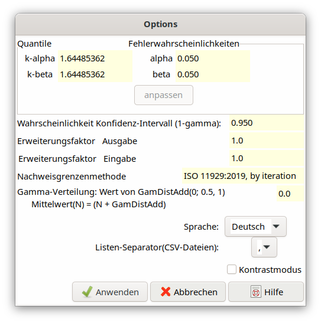

2.6. Dialog Optionen - Voreinstellungen¶

Dieser Dialog erlaubt die Einstellung folgender Parameter, die bei der Berechnung von Erkennungs- und Nachweisgrenze verwendet werden:
die Quantile der Normalverteilung, \(k_{1 - \alpha}\) und \(k_{1 - \beta}`**, sowie die ihnen zugeordneten Irrtumswahrscheinlichkeiten *α* und *β* („Fehler 1. und 2. Art”)**; das Programm benötigt nur die Werte von :math:`k_{1 - \alpha}\) und \(k_{1 - \beta}\), man kann aber auch zuerst die gewünschten Werte der Irrtumswahrscheinlichkeiten eingeben, woraus dann die Quantile berechnet werden.
Presetting in the case of preparing a new project:
k-alpha = 1.644854, alpha = 0.05k-beta = 1.644854, beta = 0.05.Wird ein Quantil-Wert geändert, so muss der zugehörige Wahrscheinlichkeits-Wert angepasst werden; dies wird durch Sperren des Editors angezeigt, und der Button „adjust” (oben) wird aktivierbar. Wird umgekehrt zuerst ein Wahrscheinlichkeits-Wert geändert, gilt das Entsprechende. Nach Anwahl des Buttons „adjust” wird der jeweils andere zugehörige Wert angepasst; ohne diese Anpassung kann der Dialog nicht verlassen werden.
die Nachweisgrenzenmethode: hier kann nur die Methode nach DIN EN ISO 11929-1:2021 verwendet werden.
Für die Berechnung der Grenzen des (zweiseitigen) Konfidenzintervalls (besser: Überdeckungsintervalls) wird der Wert der zugehörigen Wahrscheinlichkeit \((1 - \gamma)\) benötigt, der im entsprechenden Feld eingetragen werden kann. Der voreingestellte Wert ist \((1 - \gamma) = 0.95\).
Der Wert des Erweiterungsfaktors k wird zur Berechnung der erweiterten Unsicherheit benötigt, die im Feld Erweiterungsfaktor Ausgabe definiert werden kann. Der voreingestellte Wert ist 1 (interne Variable coverf).
Stellen in einer Projektdatei die Unsicherheiten der gelisteten unabhängigen Eingangsgrößen bereits erweiterte Unsicherheiten dar, muss für das Einlesen der Erweiterungsfaktor wieder entfernt werden. Der für die Eingangsunsicherheiten der unabhängigen Größen verwendete Erweiterungsfaktor wird unter Erweiterungsfaktor Eingabe eingetragen. Dieser ist standardmäßig mit dem Wert 1 vorbesetzt (interne Variable coverin).
Wenn man mit UncertRadio ein Projekt im Dialog bearbeitet, ist normalerweise coverin=1. Der Wert coverin=2 wird eher der automatisierten Betriebsart vorbehalten sein, wenn das UncertRadio aus einer anderen Anwendung heraus automatisiert betrieben wird. Bei z.B. einer Excelanwendung übergibt diese eine in Excel mit Daten gefüllte Projektdatei an UncertRadio zur Auswertung. Sind hier die Eingangsunsicherheiten mit coverin=2 eingegeben worden, und ist coverin=2 in der übergebenen Projektdatei angegeben, wandelt UncertRadio diese Unsicherheiten schon beim Einlesen um, indem diese durch 2 geteilt werden. Die internen Rechnungen laufen dann alle mit dem Erweiterungsfaktor 1. Erst bei der Ausgabe in eine externe CSV-Datei, die danach von Excel wieder eingelesen wird, werden die auszugebenden Unsicherheitswerte mit dem Wert der Variablen coverf multipliziert, der im Projekt ebenfalls anzugeben ist.
Bei der automatisierten Verwendung von UncertRadio ist zu beachten, wie die Unsicherheitswerte korrekt in die Projektdatei einzutragen sind: siehe Abschnitt 2.8.3.
Der Dialog enthält ein Eingabefeld für eine Variable GamDistAdd. Dieser Parameter repräsentiert das x in der (N+x)-Regel für Impulsanzahlen oder Zählraten zwischen 0 und 1. Die Werte 0, ½ und 1 für GamDistAdd entsprechen üblichen Priors innerhalb einer bayesschen Betrachtung, die proportional zu \(\nu^{- (1 - c)}\) sind mit c=GamDistAdd. Für Variablen, für die die (N+x)-Regel ausgewählt wurde, wird eine entsprechende Gamma-Verteilung angenommen.
c=GamDistAdd |
(1-c) |
mean |
|---|---|---|
0 |
1 |
N+0 |
1/2 |
1/2 |
N+1/2 |
1 |
0 |
N+1 |
Die Sprachdarstellung in den Programmdialogen und das Listentrennzeichen für CSV-Dateien können während des Betriebs umgestellt werden (Wechsel zwischen DE und EN). Siehe dazu: Länderspezifische Parameter.
Siehe auch: Hinweis zum späteren Aufruf dieses Optionen-Dialogs.